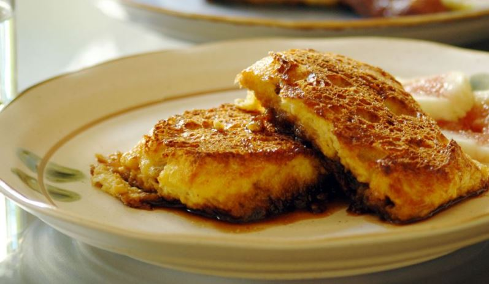

French Toast

Ingredients
- 4 (1 inch thick) slices King's Hawaiian® Sweet Bread
- 4 large eggs large eggs
- ½ cup milk
- ½ teaspoon vanilla
- ¼ teaspoon ground cinnamon
- 2 tablespoons Butter or oil for frying
- 2 tablespoons Maple syrup
Directions
-
Step 1 Slice bread crosswise so that each slice is about 1-inch thick. Cut larger slices into halves or thirds, if desired. Set aside.
-
Step 2 In a shallow mixing bowl, whisk together the eggs, milk, vanilla and cinnamon.
-
Step 3 Quickly dip slices (do not soak) in egg mixture and cook until golden brown on both sides.
-
Step 4 Keep egg mixture stirred and spices well blended.
-
Step 5 Sprinkle with powdered sugar and serve with warm maple syrup.